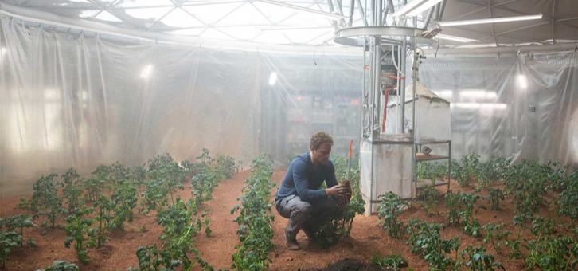
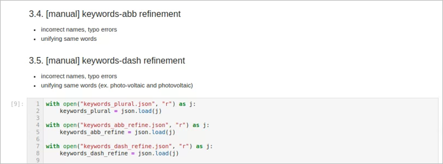
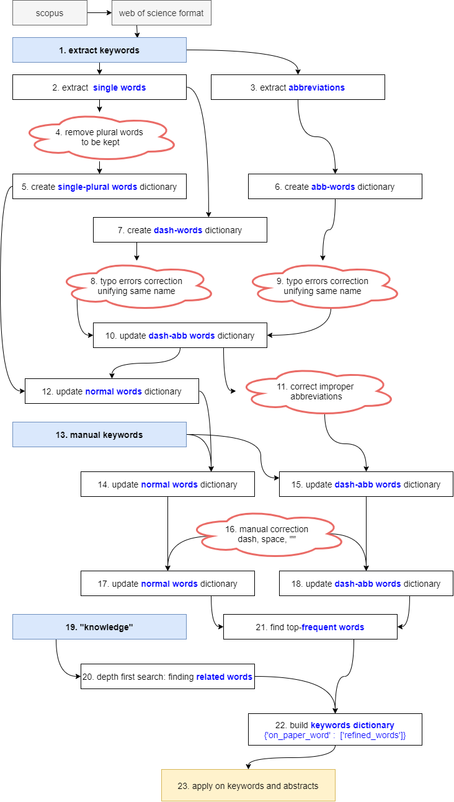
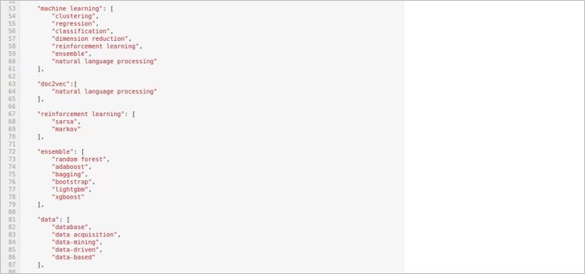
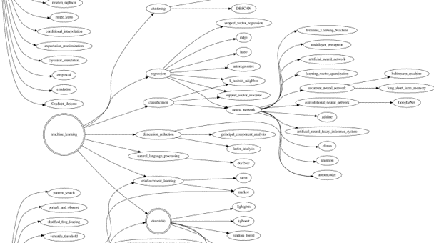
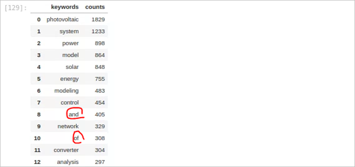
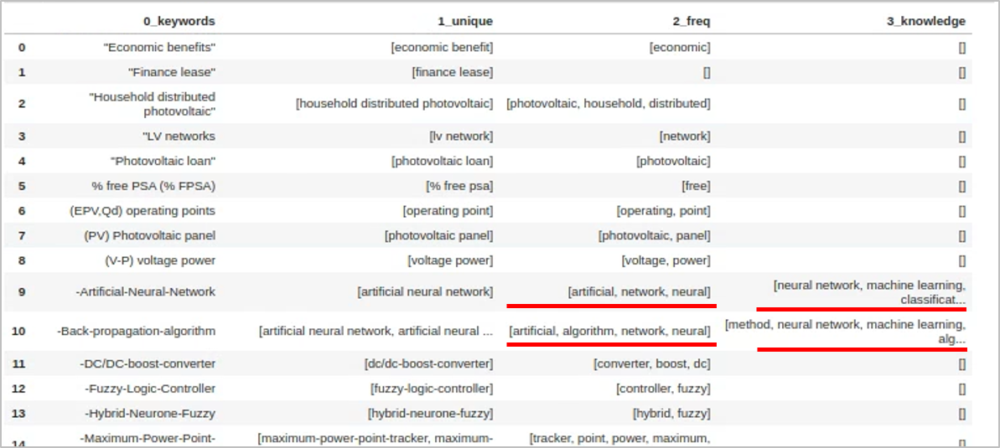
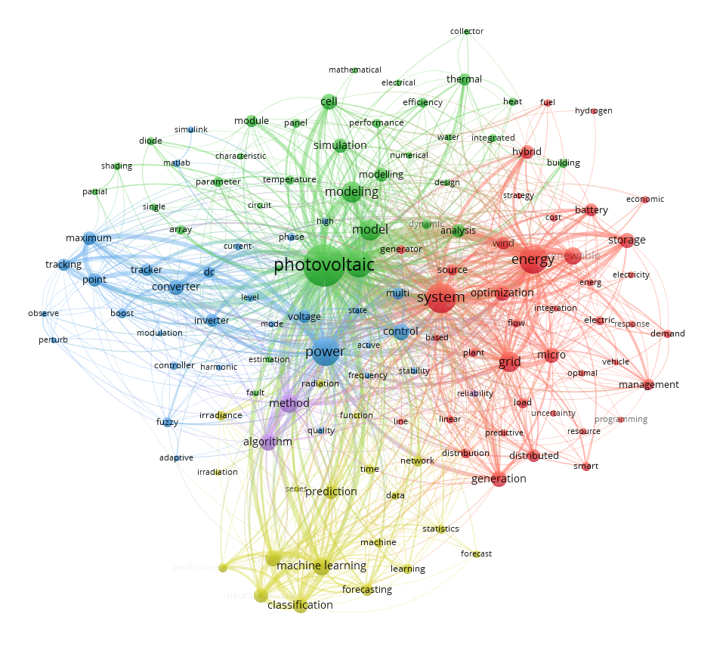
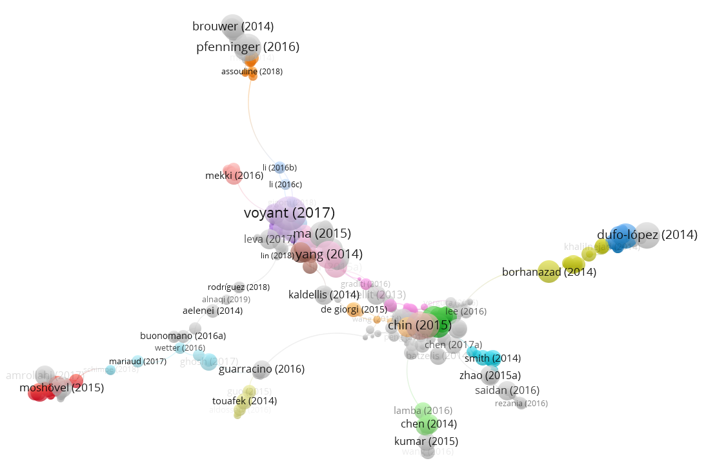

1. 요약
1.1. 포부
- 논문을 긁어서 내용을 정리할 수 있음을 이전 글에서 간략히 언급했습니다.
- 짧은 시간동안 필요한 결론을 도출할 수 있었고 피보고자의 반응도 좋았습니다.
- Notepad++에서 시간에 쫓기며 find(
Ctrl+F), replace(Ctrl+H)를 반복하며 작업했기에 기록도 없었습니다. - 다음에도 이 강력한 기능의 재현 가능성을 확보하고자 했습니다.

1.2. 현실
주피터 노트북을 켜고 경험을 더듬어가며 깨달았습니다.
저 감자밭을 만들기 전에 뭘 했는지 기억이 났습니다.
1.3. 의지
- 그래도 지금이 아니면 정리할 수 없다는 생각에 의지를 불태웠습니다.
- 3일로 잡았던 일정이 열흘이 걸렸습니다.
- 겨우 재현 가능한 정형화를 했지만 다른 글과 달리 코드를 공개하지 않기로 했습니다.
- 대신, 전체적인 flow와 유념할 사항들을 선택적으로 기록하기로 했습니다.

2. 기록
2.1. Flowchart
- 본 작업은 자동화가 가능한 부분과 불가능했던 부분으로 나누어집니다.

nltk를 사용해 복수를 단수로 바꾸는 작업이 가능했습니다.
그러나 품사 변환은 마음같지 않았습니다.
- optimization을 기대했던 optimize 명사변환은 optimum이 나왔습니다.
- 전문용어가 아니면 틀린 단어이기 때문에, 사전을 만들며 작업했습니다.
논문 작성자들의 예상치 못한 실수와 고의가 담긴 단어들은 새로운 단어로 인식됩니다.
- “Multiple-layer perceptrion”을 담은 글이 있기도 하고
- “Newton-Rhapson”처럼 사람 이름을 틀립니다.
정상적인 단어들이라고 쉬운 건 아닙니다.
- “EV”라는 동일한 약어가 “expected value” 이기도 하고 “electric vehicle” 이기도 합니다.
- 같은 의미가 “BIPV”, “BAPV”, “BISS” 등 여러가지로 표시되는 건 예사입니다.
- 자연어처리 엔진에게 복수를 단수로 바꾸라고 하면 energy storage system의 약자인 ESS를 “ES”로 바꿔놓습니다.
2.2. Knowledge
- 무엇보다, 키워드에 드러나지 않는 지식을 담는 과정이 만만찮았습니다.
- “xgboost”는 “machine learing” 방법론입니다.
- “tree model”에 속하며, “ensemble” 기법입니다.
- 그리고 “ensemble” 기법은 “statistics”의 가지입니다.
- 이를 처리하고자 knowledge graph를 그렸습니다.

- 그런데 줄기(key)를 보고 가지(value)를 입력받으면 안됩니다.
- 가지를 보고 어느 줄기에 속해있는지를 찾아야 했습니다.
- 여러 단계를 거쳐야 했기 때문에, 이 그래프를 해석해서 연관어 사전을 만들었습니다.
class를 이용해 상속할 수 있을까도 싶었는데, 그냥dictionary로 처리했습니다.

DFS(depth first search)를 구현했습니다.
1
2
3
4
5
6
7
8
9
10
11
12
13
14
15
16
17
18
19
20
21
22
23
24
25def find_key(value):
result_key = []
for k in kn_keys_init:
if value in keywords_knowledge_init[k]:
result_key.append(k)
return result_key
def dfs(graph, start_node):
visit = []
stack = []
stack.append(start_node)
while stack:
node = stack.pop()
if node not in visit:
visit.append(node)
stack.extend(find_key(node))
return visit
keywords_knowledge = {}
for kn in kn_values_all:
value_add = dfs(keywords_knowledge_init, kn)
keywords_knowledge.update({kn: value_add})그리고 원래의 키워드에 해당하는 단어들을 찾아 끼워줍니다.
1
2
3
4
5
6
7
8
9
10
11
12
13
14
15
16
17
18
19
20
21
22
23dict_values_kn = []
for values in dict_values:
dict_values_kn_ = []
for value in values:
for kn_key in kn_values_all:
# multiple words (ex. monte carlo, rule-based):
if len(kn_key.replace("-", " ").split(" ")) > 1:
kn_key0 = "-".join(kn_key.replace("-"," ").replace("_", " ").split(" "))
if kn_key0 in value.replace(" ","-").replace("_", "-"):
dict_values_kn_.extend(keywords_knowledge[kn_key])
# single word (ex. ensemble)
else:
if kn_key in value.replace("-"," ").split(" "):
dict_values_kn_.extend(keywords_knowledge[kn_key])
dict_values_kn.append(list(set(dict_values_kn_)))
keywords_dict_kn = dict(zip(dict_keys, dict_values_kn))
with open("keywords_dict_kn.json", "w") as j:
json.dump(keywords_dict_kn, j, ensure_ascii=False, indent=2)
2.3. Frequency
8700여개 문서에서 추출한 키워드는 20000개 가량입니다.
- 사실상의 중복이 많아 처리하는데 애를 먹었습니다.
- 그리고 중요한 단어와 중요하지 않은 단어가 있습니다.
- 빈도 중심으로 또 한번 정제를 해줍니다.
원치 않는 단어들이 끼어있습니다.
- 키워드를 단어 단위로 쪼개다 튀어나온 듯 합니다.
- stop words를 지정해서 제거해줍니다.

knowledge에서 가져온 단어와 빈도 중심 단어를 합치려고 합니다.
- “artificial neural network”가 있는데,
- “artificial”, “neural”, “network”가 또 있습니다.
- 한 단어가 다른 단어를 포함하는지를 검사해서 제거해줍니다.

2.4. Abstract
- 8300여개 문헌 중 1700여개 문헌에 키워드가 없습니다.
- 버리기엔 아까운 숫자입니다.
- 전체 논문의 abstract를 한번 더 긁어줍니다.
3. 결실
- 이렇게 단어를 정제하면, 비로소 볼만해집니다.
- 언뜻 봐도 비슷비슷한 무리끼리 모인 것 같습니다.
- 키워드 정제 전과 비교하면 차이가 큽니다.

- 그러나 수없이 들어간 수동 작업이 영 찜찜합니다.
- 기계적으로 최상위 단어 중심으로 보면 모르겠습니다.
- 그러나 제 목적은 그게 아니거든요. 제 키워드는 따로 있습니다.
- 그래서, citation network와 함께 봐야 합니다.

- citation network는 물고 물리는 논문의 인용 관계를 보여줍니다.
- 제 손을 타지 않아서 오염도 안됐습니다.
- 이 분야와 저 분야가 어떻게 연결되었는지 알 수 있습니다.
- 연결되지 않을 것 같은 분야를 이어주는 논문들을 보면 존경스럽습니다.
4. Epilogue
- 정리가 쉽지 않았습니다.
- 끝이 안보이는 매뉴얼 작업에 지치고 (수천개 x 수십회)
- 손을 댈때마다 들어가는 주관이 못마땅합니다.
- 잘 못쓰기도 했겠지만, 자연어 처리 엔진들도 마음에 들지 않았습니다.
- 그럼에도 불구하고, 유용성은 부정할 수 없습니다.
- 제 목적은 paper mining 자체로 결론을 내기 위한 것이 아닙니다.
- 수천 수만 편의 논문 중 읽어야 할 논문을 추리는 것이고, 그 목적은 충실히 달성했습니다.
- 잘못 걸러진 것들이 있더라도 읽으면서 거르니 문제를 일으키지 않습니다.
- 논문 출판 전략을 짜기도 좋습니다.
- 글에서는 생략했지만, 어떤 저널에 어떤 주제가 많이 나오는지가 잘 보입니다.
- tracking을 하면서 바뀌는 트렌드를 관찰할 수도 있겠더군요.
- 물론 좋은 supervisor가 해주는 조언만은 못할 것입니다.
- 앞으로 종종 코드를 업데이트하며 사용해보려 합니다.


{kind=link}